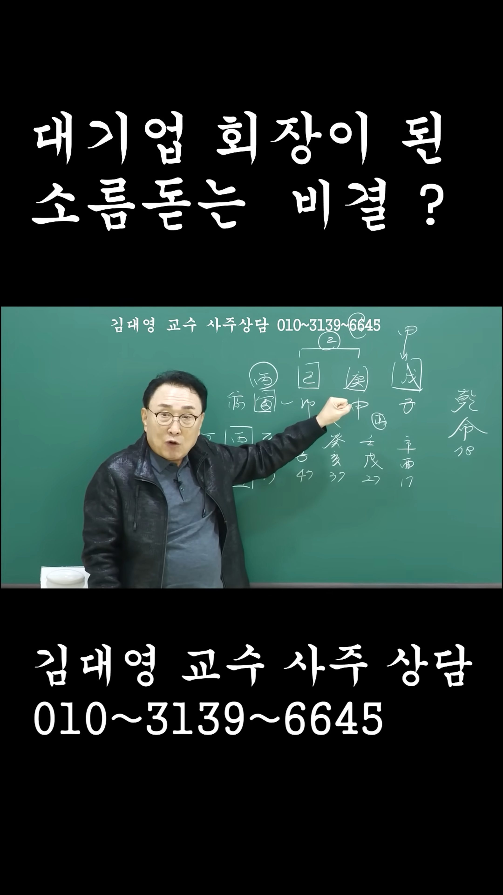

남촌물상TV 전체 문서 › Shorts S0121
대기업 회장이 된 소름 돋는 비결은 ?

| 문서 번호 | S0121 (Shorts (쇼츠)) |
|---|---|
| 영상 URL | https://www.youtube.com/watch?v=E3pQyrSSFzo |
| 영상 ID | E3pQyrSSFzo |
| 게시일 | 2025-11-01 |
| 길이 | 0:46 (46초) |
| 조회수 | 2,111회 (수집 시점 기준) |
| 카테고리 | Education |
| 자막 | ko (자동생성) |
| 수집 시각 | 2026-08-30 19:08 (KST) |
영상 설명 (YouTube 설명 원문 그대로)
사주상담 # 물상론 사주# 명리학# 성명학# 궁합# 택일#
물형상# 운명학# 남촌물상론#
전체 자막 (17구간 · 타임스탬프 클릭 시 해당 장면으로 이동)
[0:01]기토일간 내가 뿌리의 갑목에 뿌리가
[0:04]있어서 내가 욕심을 부리지 않고 저
[0:07]연애에 있는 무토의 나무를 갑목을
[0:09]심어서
[0:12]병화가 꽃을 필 수가 있고 갑목의
[0:15]국가 자리에 칼 자루가 있고 나한테는
[0:18]뭐가 돼? 결국이 경금은 칼날이 되고
[0:21]건설 회사에 해장을 할 수 있는
[0:24]사주가 된다 그 말입니다. 잘못
[0:26]선택하면은
[0:28]각기 합에서 을목이 신금이 됐을
[0:30]경우이 경우는 작은 설계 상무성
[0:34]일하는 사람에 불과하고 지지의 신금의
[0:37]뿔이 유금이 오니까 작업의 형태를
[0:40]취하다 보니까이 사람 경우는 일생이
[0:42]이렇게 달라지게 된다는 사실을 알아야
[0:45]한다 그 말입니다. 다
칠판 원국 판독 (영상 프레임을 AI가 시각 판독 · 원판 대조 필수)
乾造
천간
戊
천간
庚
천간
己
천간
丙
지지
子
지지
申
지지
卯
지지
寅
판독 신뢰도: 높음
판독 노트: 대기업 회장 판, 乾造 18, 대운 辛酉17~甲子47, 乙○(乙庚합)·甲→戊 화살표 · 시점 0:21 · 해당 장면 보기↗
자막은 YouTube에서 제공하는 한국어 자동음성인식(ASR) 트랙의 원문입니다. 고유명사·한자 용어·숫자 표기에 자동인식 특유의 오류가 있을 수 있어, 원문을 가능한 한 그대로 보존했습니다. 위에 칠판 원국 판독 섹션이 있는 영상은 화면 프레임을 AI가 시각 판독한 것으로 신뢰도 표기를 확인하고, 없는 영상은 화면 도표가 문서에 포함되지 않습니다.